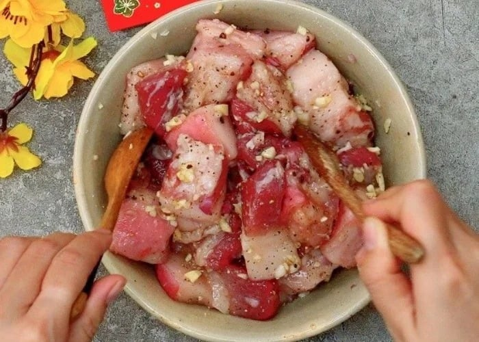
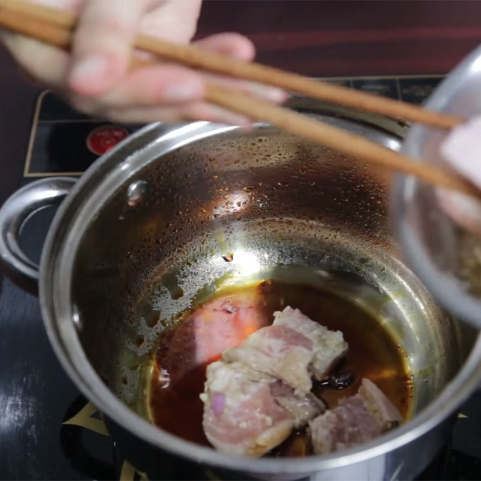

- Thịt ba rọi: 1 kg (chọn loại có cả nạc và mỡ).
- Trứng vịt: 5 quả (luộc chín, bóc vỏ).
- Nước dừa tươi: 1.5 lít (giúp nước kho ngọt thanh).
- Hành tím, tỏi(băm nhỏ)
- Gia vị: nước mắm, muối, đường, tiêu, bột ngọt.
- Ớt đỏ: 3–5 trái (tùy khẩu vị).

- Thịt ba rọi rửa sạch, cắt miếng vuông vừa ăn.

- Trứng vịt luộc chín, bóc vỏ.

- Băm nhuyễn hành, tỏi.
- Hành tím, tỏi băm nhỏ để phi thơm.
- Ướp thịt với hành tím, tỏi, nước mắm, đường, tiêu trong 30 phút để thấm gia vị.
- Có thể thêm chút nước màu (nấu từ đường thắng) để tạo màu nâu cánh gián đẹp mắt.
- Phi thơm hành tỏi, cho thịt vào đảo săn.
- Đổ nước dừa tươi vào ngập mặt thịt.

- Thêm trứng vịt đã luộc, nêm lại gia vị cho vừa ăn.

- Kho lửa nhỏ trong 1–1.5 giờ đến khi thịt mềm, nước kho sánh lại, trong và có màu đẹp.

12A4_N1_D2
Ngày cập nhật nội dung gần nhất: 19/01/2026
Tham khảo từ các nguồn như: Chatgpt.com, amthucvn.com, google.com, giatrinhbakery.com.vn, ...